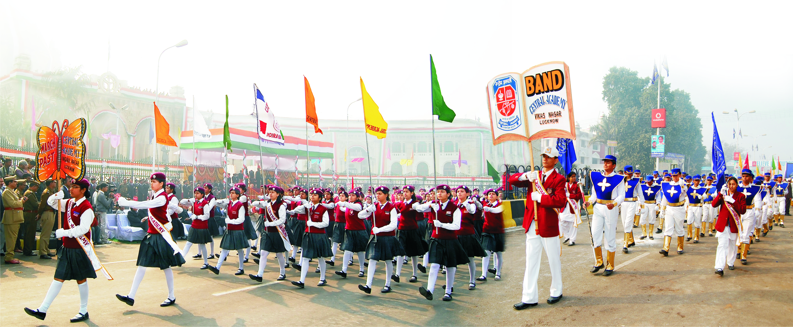
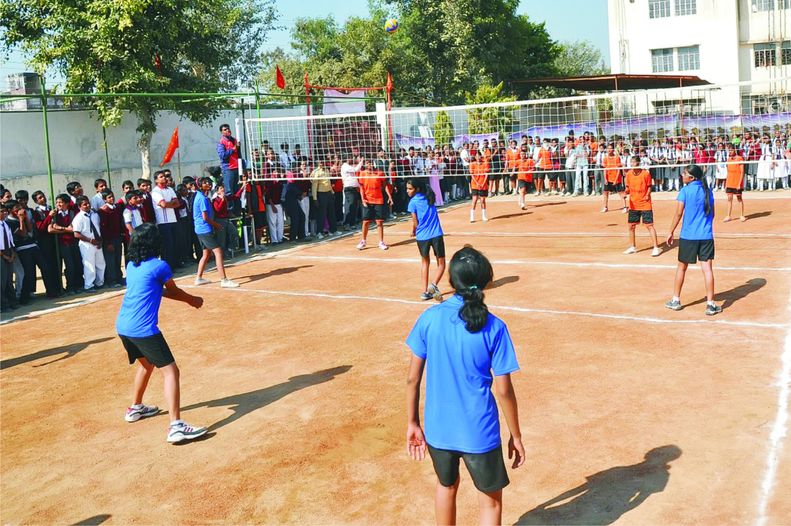

About Us
With the publication of the Kothari Commission's report on education, the urgent need for Schools with a common syllabus throughout the country was felt. Although the Govt. of India and many states took steps in order to honour the spirit of Kothari Commission, till the late sixties only a few hundreds schools could be established. The rapidly burgeoning demand for such schools made the Children's Education Trust Of India, founded in 1966, realise its duty towards the need of our society. With the inspiration from the great educationalist late Dr. Sarvapalli Radha Krishnan, the Children's Education Trust of India constituted the Central Academy Educational Society, which made a long term programme to establish such institutions at various places all over the country.
The rapidly burgeoning demand for such schools made
the Children's Education Trust Of India, founded in 1966, realise its duty towards the need of our society. With the inspiration from the great educationalist late Dr. Sarvapalli Radha Krishnan, the Children's Education Trust of India constituted the Central Academy Educational Society, which made a long term programme to establish such institutions at various places all over the country.
“Learning gives creativity; creativity leads to thinking; thinking provides knowledge; knowledge makes you great” – A. P. J. Abdul Kalam
Our Vision
Central Academy is dedicated to the development of wholesome foundation for a generation which would mould the destiny of our country in the 21st Century. It is an Institution with its eyes firmly focused on the future. We believe that freedom of spirit and zeal for discovery are as important as the need for discipline and a sense of duty. We aim to develop both the mind and the body of the child and strongly emphasize the need for an all round development of the student's personality.

Our Goal
We treat students as strong individuals and help them realize their potential within a secure and happy environment.
We motivate students to take initiative and responsibility in both academic and co-curricular activities.
We make efforts in directing students to achieve their goals without putting unnecessary pressure.
We ensure equal opportunity, irrespective of gender, religion or any inherited weakness of a child.
We promote students' self-esteem and encourage an attitude of courtesy and good behaviour.
We help in developing spiritual, moral, social and cultural aspects in a student's personality.
“Tell me and I forget. Teach me and I remember. Involve me and I learn.” – Benjamin Franklin
